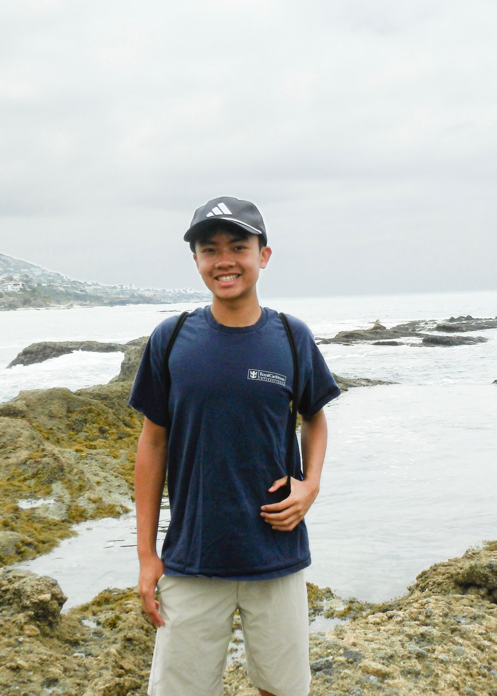

Tyler Au
Westminster, California Chapter Vice President
High school provides numerous opportunities for leadership and new experiences as a sophomore, so I decided to help Christy establish this chapter and lead as Vice President.
I'm a nice guy who is easy to get along with, and I prioritize growth and development over awards and certificates.
My extracurricular activities include badminton, photography, and hiking, but I am always striving to pick up more things along the way of life.